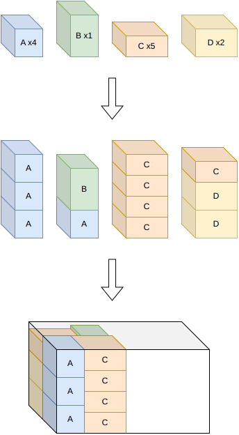
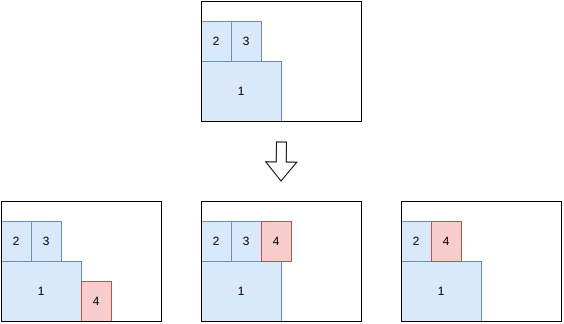

box-stacks algorithms¶
See boxstacks for the input/output format and CLI usage of this solver.
Sequential one-dimensional / rectangle¶
This algorithm solves the feasibility and knapsack objectives with a single bin.
It decomposes the problem in two phases:
Group items into stacks by solving a one-dimensional variable-sized bin packing problem (each stack is a “bin” whose length is limited by the stacking constraints).
Pack the resulting stacks into the bin’s footprint by solving a rectangle knapsack problem.
The stacks generated in the first step contain exactly all the items.
{kind=link}

This decomposition is much cheaper than the full tree search below, and is designed for instances where axle/weight constraints don’t force a sparse packing.
Tree search¶
This algorithm solves the feasibility and knapsack objectives with a single bin.
It is a tree search algorithm where a single item is packed at each stage. The root node is an empty partial solution (no item packed). Given a node, a child node is generated for each feasible insertion of each unpacked item, either in the same bin or in a new bin.
The possible insertions for an unpacked item are the ones where the new item has its lower y touching either another packed stack or the y = 0 side of the bin; or where the new item is stacked over a packed stack.
{kind=link}

This algorithm is more expensive than the sequential one-dimensional / rectangle algorithm. It is useful when axle-weight constraints are active in the best solutions.